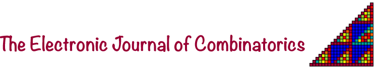

25th Birthday Celebration of 
Fletcher Challenge Theatre, SFU Harbour Centre
Simon Fraser University, Vancouver
Monday 27th May 2019
This is a satellite conference to the 7th Canadian Discrete and Algorithmic Mathematics Conference (CanaDAM
2019), 28–31 May 2019.Register as part of your registration for CanaDAM 2019 (faculty $15, postdocs and students $5).
| 8:15 – 8:55 | registration | |
| 8:55 – 9:00 | Richard Brualdi | opening |
| 9:00 – 9:45 | Francisco Santos | Classification of lattice polytopes (introduced by Marc Noy) |
| 9:50 – 10:35 | Bruce Sagan | The protean chromatic polynomial (introduced by Qing Xiang) |
| 10:40 – 11:05 | coffee break | |
| 11:10 – 11:55 | Maya Stein | Trees in graphs with large degrees (introduced by Zdeněk Dvořák) |
| 12:00 – 13:40 | lunch | |
| 13:40 – 14:25 | Neil Calkin, Fan Chung, André Kündgen, Brendan McKay | Panel discussion on the history of E-JC |
| 14:30 – 15:15 | David Wood | Defective and clustered graph colouring (introduced by David Conlon) |
| 15:20 – 15:50 | coffee break | |
| 15:50 – 16:35 | Catherine Greenhill | Two threshold problems for random graphs and
hypergraphs (introduced by Rod Canfield) |
| 16:40 – 17:25 | Miklós Bóna | Most principal permutation classes have nonrational generating functions (introduced by Greta Panova) |
| 17:30 – 18:30 | David Wood | General discussion on open access journals |
Special E-JC minisymposium at CanaDAM, Tuesday 28th May
| morning session (Chair: André Kündgen) | ||
| Ian Wanless | Generalised transversals of Latin squares | |
| Matthias Beck | Classification of combinatorial polynomials (in particular, Ehrhart polynomials of zonotopes) | |
| Ronald Graham | A few of my favorite combinatorial problems | |
| Catherine Yan | Vector parking functions with periodic boundaries and rational parking functions | afternoon session (Chair: Michael Giudici) |
| Bojan Mohar | Crossing-critical graphs | |
| Fan Chung | Problems in spectral graph theory | |
| Zdeněk Dvořák | On triangle-free planar graphs | |
| József Solymosi | Rigidity of planar arrangements | |
Organisers: Richard A. Brualdi, Bojan Mohar, Bruce Sagan, Maya Stein, David Wood
E-JC gratefully acknowledges the support of the Pacific Institute for the Mathematical Sciences (PIMS) and Simon Fraser University (SFU)